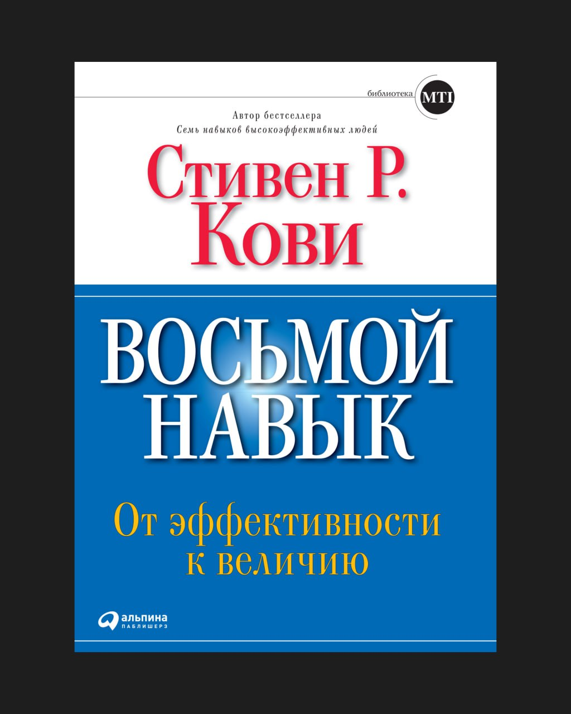

В одном из прошлых постов мы затрагивали тему win-win, я все еще продолжаю к ней мысленно возвращаться.
Книга «Восьмой навык» давно была у меня в списке кандидатов в топ-50, и эта тема напомнила о ней. Для меня важно строить отношения так, чтобы выигрывали все стороны, а не только тот, кто громче, жестче или формально прав.
Для меня win-win — внутренняя установка и фильтр, через который я смотрю на взаимодействие с людьми. Если в отношениях нет стремления выигрывать вместе, рано или поздно они всё равно приводят к потерям для всех.
В карточках лучшие идеи книги.
Карточки
Эффективность больше не работает
Кови начинает с простой, но неприятной мысли: большинство организаций застряли на уровне эффективности, потому что продолжают управлять людьми как функциями. От сотрудников ждут результата, соблюдения процессов и КРІ, но при этом игнорируют вопрос смысла и внутренней мотивации. В такой системе человек быстро начинает работать «на выживание», а не на общий результат, и win-win там не возникает в принципе. Когда человек не чувствует значимости своей роли, он фокусируется на личной безопасности, статусе и контроле. Это автоматически сдвигает любые договоренности в сторону win-lose или скрытого lost-lost, даже если формально все выглядят лояльными и договороспособными.
Win-win невозможен без собственного голоса
Понятие «голос» у Кови - ключ к пониманию win-win на более глубоком уровне. Голос появляется, когда человек соединяет свои сильные стороны, внутренние ценности и реальную пользу для других. Пока этого соединения нет, человек либо подстраивается под систему, либо конфликтует с ней, и оба сценария разрушают партнерство. Win-win невозможен, если одна из сторон не говорит своим голосом и действует из позиции страха, зависимости или необходимости понравиться. В таких отношениях внешне может сохраняться корректность, но внутри постепенно накапливается напряжение и разочарование.
Win-win - это уровень мышления, а не навык
Кови подчеркивает, что win-win - это не техника переговоров и не вопрос правильных формулировок. Это отражение внутренней установки человека и уровня его зрелости. Если человек мыслит из дефицита, он всегда будет считать, что чей-то выигрыш автоматически означает его проигрыш. Мышление из изобилия требует доверия к себе, системе и процессу, а также готовности искать решения за пределами привычных рамок. Без этого любые попытки договориться будут заканчиваться временными соглашениями, которые быстро перестают работать.
Лидер отвечает за среду, а не за договоренности
Роль лидера в логике Восьмого навыка радикально отличается от привычной управленческой модели. Лидер не должен быть главным переговорщиком или арбитром во всех конфликтах. Его задача — выстроить среду, в которой люди сами способны находить win-win решения. Такая среда держится на доверии, ясных принципах и понятной цели, а не на контроле и ручном управлении. Когда этих элементов нет, лидер вынужден постоянно «тушить пожары», а команда привыкает мыслить локально и защищать свои интересы.
Компромисс - слабая замена win- win
Отдельный акцент Кови делает на подмене win-win компромиссом Компромисс выглядит цивилизованно, но часто означает, что каждая сторона отказывается от чего-то принципиально важного. В результате решение формально принято, но внутреннего согласия нет, и система начинает рассыпаться. Настоящий win-win опирается на ценности и совесть, а не на торг. Если решение нарушает внутренние ориентиры одной из сторон, оно рано или поздно приведёт к скрытому сопротивлению или выходу из отношений.
Win-win или no deal - зрелый выбор
Кови честно говорит о том, что win-win возможен не всегда и не со всеми Если одна из сторон не готова мыслить в этой логике и ориентируется только на собственный выигрыш, попытка сохранить отношения любой ценой приводит к потерям для всех. В таких случаях принцип «win-win или no deal» оказывается самым зрелым и долгосрочно выгодным решением. Отказ от сделки иногда сохраняет больше ресурсов и энергии, чем попытка удержать неработающее партнерство.
Культура win-win - вопрос выживания системы
На уровне организаций Кови показывает, что отсутствие win-win культуры редко заметно сразу. Внешне бизнес может расти, показывать результаты и выглядеть устойчивым. Но внутри постепенно вымываются сильные люди, падает вовлеченность и усиливается внутренняя конкуренция. Системы, где win-win встроен в культуру, выигрывают на длинной дистанции, потому что люди чувствуют вклад, ответственность и связь с общим результатом. Именно это создаёт устойчивость, которую невозможно скопировать регламентами или ценностями на сайте.